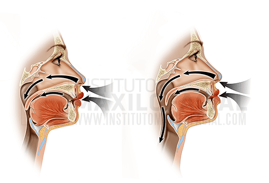
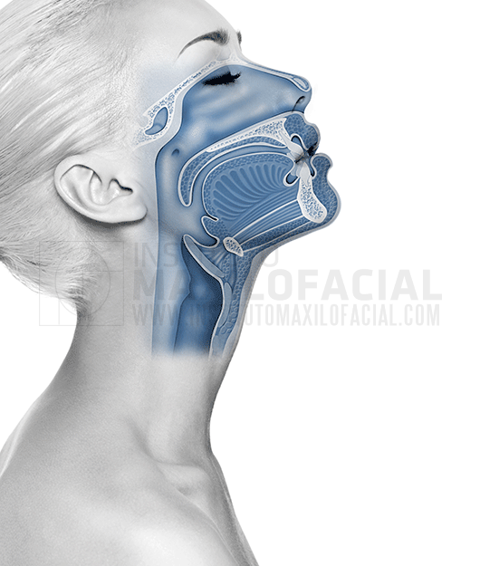

Obstructive Sleep Apnea (OSA) is a disorder consisting of
repeated episodes of pauses in breathing during sleep, known as
apnoeas, normally lasting for more than 10 seconds. The main cause of
obstruction is the collapse of the walls of the upper airway.
Obstructive Sleep Apnea (OSA) affects just over 25% of the population
and has a negative effect on the quality of life of sufferers. Not
only does it disturb their rest during the night, which, in extreme
cases, could even lead to death, but also their daily activity,
accompanied by drowsiness and chronic fatigue. Even more serious
still, Sleep Apnea causes a reduction in oxygen transported by
the blood, resulting in arterial hypertension, cardiovascular disease,
metabolic and hormonal alterations and an increased risk of accident.
Symptoms associated with Sleep Apnea
The presence of two of the following symptoms, in the absence of
other causes, could be an indicator of Obstructive Sleep Apnea:
Irregular, loud and interrupted snoring accompanied by apneas
during sleep.
Tiredness during the day.
Chronic fatigue.
Diagnostic test

Diagnosis of Sleep Apnea is carried out by means of a test called
a polysomnography, which monitors several variables during
sleep, using special devices. This test is carried out by the
Neurophysiology team, and being a multidisciplinary disorder, the
maxillofacial surgeons have to coordinate with the entire
team of specialists, which usually includes neurologists,
neurophysiologists and otolaryngologists.
Treatment of Sleep Apnea: Levels of action

There are normally four levels of action in the treatment of
Obstructive Sleep Apnea:
Weight loss
CPAP (Continuous Positive Airway Pressure)
Mandibular advancement splints
Orthognathic Surgery
One of the treatments recommended for many years has been CPAP
(Continuous Positive Airway Pressure), which is a device worn at
night, consisting of a mask connected to a machine which pumps in
pressurised air to prevent the collapse of the patient’s airways.
Most patients who have suffered from Sleep Apnoea describe the
CPAP as a “horrendous” machine. Intolerance to the noise and the
mask, nasal congestion and irritation of the mucous membranes make
70% of patients want to stop using the CPAP and find a more
comfortable and effective alternative. Mandibular advancement
dental splints constitute a diagnostic element and a temporary
solution for less serious cases of Sleep Apnea. According to
recent studies, prolonged use of this splint can cause alteration
of the bite and deterioration of the temporomandibular joint.
However, thanks to the continuous dedication and intense research
into Obstructive Sleep Apnea, the specialists at the Maxillofacial
Institute, along with other international groups, have
scientifically demonstrated that orthognathic surgery provides a
definitive solution to this serious problem in patients with
dentofacial deformities. See article:
Effect of Mono and Bimaxillary Advancement on Pharyngeal Airway
Volume: Cone-Beam Computed Tomography Evaluation.